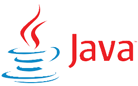

Daniel Eduardo Bocachica
Estudiante de ingeniería de sistemas
Home
About me
Projects
Contact

Habilidades
Pensamiento lógico y resolución de problemas
Optimización y eficiencia
Integración de sistemas
Trabajo en equipo y colaboración
Estructuración y organización
Habilidades técnicas
Backend:
C++ (Estructuras de datos: Grafos, Árboles, Pilas, Colas)
Java (Desarrollo de aplicaciones y estructuras de datos)
Python (Análisis de datos, algoritmos y backend)
Base de datos:
SQL (Consultas, modelado de datos)
Conexión de bases de datos con backend